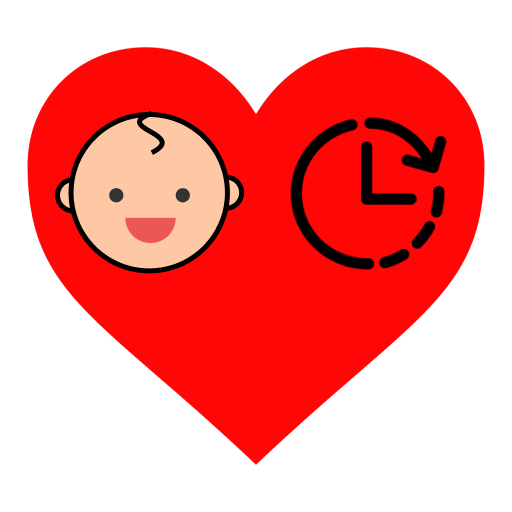

Secure Attachment Style
Securely attached infants are easily soothed by the attachment figure when upset. Infants develop a secure attachment when the caregiver is sensitive to their signals, and responds appropriately to their needs.
John Bowlby's Theory (1969)
Children come into the world biologically pre-programmed to form attachment for survival
Child would initially form only one attachment and that the attachment figure acted as a secure base for exploring the world

Attachment relationship acts as a prototype for all future social relationships so disrupting it can have severe consequences